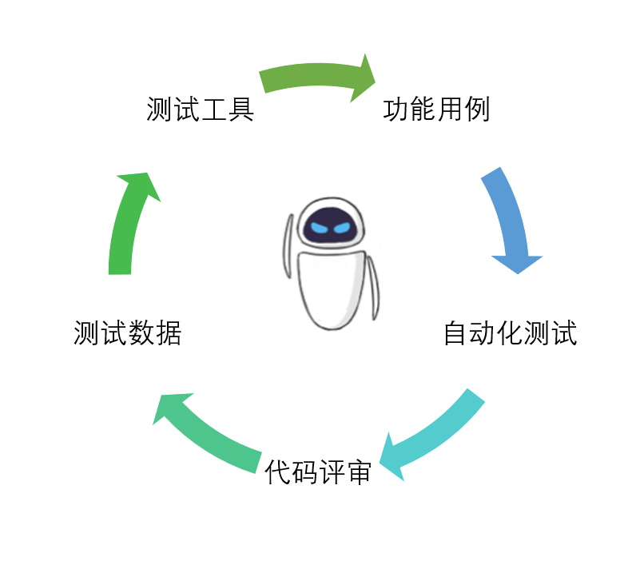

本书作者：测试开发刚哥，文章版权归个人所有，未经授权请勿转载。

“ChatGPT是倾盆大雨前的第一场雨”，OpenAI首席科学家Ilya Sutskever。
大模型是指在人工智能领域，尤其是机器学习和深度学习中，具有大量参数和复杂结构的模型。
大模型通过在大量数据上进行预训练，然后针对特定任务进行微调，最终部署到应用中以执行复杂任务。
最近百度推出的“萝卜快跑”打车（Robotaxi），就是大模型应用之一。收集大量驾驶数据，包括视频、图像、雷达、车辆传感器等数据，对数据进行标注、归一化和增强等预处理。然后对大模型进行预训练，学习道路环境、交通规则、物体识别等。根据自动驾驶需求，对模型进行微调，保持车道、避让障碍物、识别交通标识等。将训练好的模型集成到自动驾驶系统中，在模拟环境和封闭场地进行测试。经过充分的模拟和实车测试后，部署到出租车上，实现无人驾驶。
未来世界，到底是个什么样的世界啊。
截止2024年初，已有诞生了近百个参数规模大于100亿的模型，在图像语言、推荐系统、医疗诊断、办公软件等各行各业，掀起了滔天巨浪，甚至有人感叹第四次工业革命是不是就要到来。
从个人体验来说，日常工作中使用ChatGPT时间已经远远超过了搜索引擎。测试工作虽然没有颠覆式改变，但可以预见未来会有不少变化。
以下纯属我的猜想。
功能用例。AI可以根据需求文档分析出功能用例。只要针对垂直业务进行大量训练，一个既懂业务，又懂测试用例设计的机器人，是很可能出现的。
自动化用例。AI可以自动生成，自动执行，自动断言，自动完成自动化测试。流量录制回放已经替代了部分回归测试工作，有AI能力加持，很难不去想象，未来是不是会出现“无人回归测试”。
代码评审。AI可以分析增量代码，计算出影响范围，给出改动点、影响点和测试点。ChatGPT已经很懂代码了，再结合精准测试分析，这项技术会愈加成熟。
测试数据。AI可以生成各种各样的测试数据。文件数据、内存动态数据、数据库存储数据，想要什么给你什么。
测试工具。AI可以快速生成测试工具。ChatGPT具备强大的代码生成能力，创建工具将变得简单快捷。
AI未来是否会取代人类？测试工作的特点之一是重复性，AI恰好就是解决重复问题的，所以很多重复性测试工作，一定会被AI取代。但是AI始终无法取代测试人员，为什么？
因为AI不能替测试人员背锅呀。